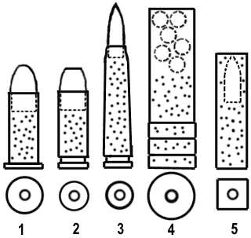

Voici les les grands types de munitions à poudre en usage dans le monde de Cyberpunk 2020. Ces dispositifs s'inspirent d'un principe connu depuis le dix-neuvième siècle : projeter un projectile en métal lourd (du plomb, plus rarement de l'uranium pour les armes lourdes entouré ou non d'un autre métal plus rigide comme le laiton, le cuivre ou l'acier) à partir d'une charge de poudre explosive. Du téflon peut être utilisé comme enveloppe afin de réduire les frottements avec le canon grâce à ses propriétés lubrifiantes. L'explosion est elle-même déclenchée par un une amorce réagissant à l'impact d'un percuteur sur l'arrière du projectile.

1) Balle de revolver. Elle se reconnait à son extrémité large qui permet de bloquer la balle dans le barillet. L'étui est traditionnellement en laiton ou en matière plastique (plus courant en 2020).
2) Balle de pistolet, avec gorge d'éjection. La matière composant l'étui est identique à la balle de revolver. Ces munitions sont également utilisées dans les carabines, qui sont des fusils légers.
3) Balle de fusil d'assaut ou de chasse, plus longue et effilée qu'une balle d'arme de poing. La matière composant l'étui est identique aux balles prédédente.
Le projectile est plus aérodynamique que celui d'une arme de poing, car il est destiné à être tiré à haute vélocité, et à plus longue distance.
4) Cartouche de chasse à plombs. Les projectiles sont multiples et forment une gerbe. L'étui est toujours en plastique, et un bouchon empèche le contenu de s'échapper. Ces cartouches sont utilisées par les fusils de chasse, les "riot gun" (armes à plombs automatiques) et les fusils à pompe. Ces armes sont à "âme lisse" (pas de rainures dans le canon).
5) Balle sans étui (Caseless). Ici, la poudre forme l'enveloppe du projectile. Un vernissage la protège de l'humidité et des chocs. Il y a très peu de matière restant lorsque la poudre a explosé. La section est carrée pour une meilleure occupation de l'espace.
La balle caseless peut être utilisée dans des armes de poing comme dans des fusils. L'avantage de la balle caseless réside essentiellement dans son faible poids et son volume optimisé. Elle est plus sensible qu'une munition classique à l'humidité et aux chocs, et s'adapte difficilement à un revolver.